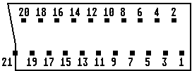

Previous
Next
TOC
Reine VGA-Monitore sind zum Betrieb am ST/STE völlig ungeeignet!
(Ich kann Dir genug Monitore zeigen, die SThoch eben nicht machen,
weil es reine VGA-Monis sind. Also ist ein Blick in die Doku drin-
gend angeraten, ob der Typ 38 KHz horizontal macht, denn auch
35.5 KHz-Büchsen liefern z.T. saumäßige oder gar keine Bilder und
die reinen 31.5 KHz liefern überhaupt kein brauchbares Bild.
Und zum Abschluß noch das Scartkabel für ST/STF/STFM, STE Computer
und Falcon030
Hier nun die korrekte Belegung für die Verdrahtung:
ST Pin
1 führt Tonsignal
und kommt an Scart Pin
2 und 6
ST Pin
2 führt H+V Sync-Gemisch und kommt an Scart Pin 20
ST Pin
6 führt Grün-Signal
und kommt an Scart Pin 11
ST Pin
7 führt
Rot-Signal
und kommt an Scart Pin 15
ST Pin
8 führt +12 Volt
und kommt an Scart Pin
8 *)
ST Pin 10 führt Blau-Signal
und kommt an Scart Pin
7
ST Pin 12 führt Vertikal-Sync
und kommt an Scart Pin 16
ST Pin 13 führt Masse
und kommt an Scart Pin 4, 5, 9, 13
und Pin 17 + 18
*) wird bei einigen TV-Geräten zur Umschaltung auf den AV-Eingang
benötigt
Sollte das Bild zu Hell sein (
Helligkeit überstrahlt) müssen Wider-
stände (100 Ohm - 1 Kohm, ausprobieren) als Reihenwiderstände im
Scart-Stecker eingelötet werden.
21-pin SCART-Connector:
_________________________________________________
I
1
3
5
7
9
11
13
15
17
19
21
I
2
4
6
8
10
12
14
16
18
20 \
I--------------------------------------------------\

1: Audio right out
2: Audio right in
3: Audio left out
4: Audio GND
5: Blue GND
6: Audio left (or mono) in
7: Blue in (0.7Vpp)
8: AV switching voltage in (12VDC) or sync pulses when RGB-mode
9: Green GND
10: Data 2 (Verbindung zwischen TV & VCR für Senderabgleich, etc.)
11: Green in (0.7Vpp)
12: Data 1
Die S-VHS Belegung
13: Red GND
Chroma GND
14: Data GND
15: Red in (0.7Vpp)
Chroma Signal in/out (0.5V)
16: negative blanking pulse in (Austastsignal)
17: Composite Video GND
Luminanz GND
18: RGB blanking pulse GND (Austastsignal)
19: Composite Video out
Y/C Luminanz out
20: Composite Video in (1Vpp, 75 Ohm)
Y/C Luminanz in (1Vpp)
21: Cable shielding (Kabelabschirmung)
weiterblättern Monitor-Adapter von 15 auf 9 Pol
Kapitel Wie schließe ich den Monitor an meinen Computer an, Seite 5